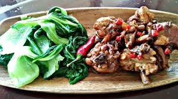
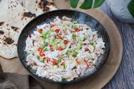

Tinaktak is a flavorful Chamorro dish from Guam, featuring ground beef or chicken that closely resembles the Filipino ginataan dishes. The differnce is found in the uniquely Chamorro use of cooking beef/chicken/venison and tomatoes with the coconut milk, with a touch of lemon pouder. This combination of tomatoes, coconut, lemon, and beef is rarely done in the Philipines. Your choice of protein is cooked with coconut milk, potatoes, and vegetables like green beans or spinach. It's creamy, savory, and uniquely tropical, thanks to the addition of coconut. It's a comforting and satisfying meal that showcases the diverse culinary influences of the Pacific Islands.
Kadun pica, also known as "kadun pika" or "kadu pika," is a popular spicy dish from Guam, reflecting the island's vibrant culinary heritage. "Kadun" means meat in Chamorro, the indigenous language of Guam, and "pika" refers to spicy. Essentially, kadun pika translates to "spicy meat." The dish typically features marinated chunks of meat, often venison, pork, chicken, or beef, which are then cooked with a spicy blend of ingredients such as hot peppers, onions, garlic, soy sauce, vinegar, and lemon juice. The heat level can vary depending on personal preference and the type of peppers used, but it's generally known for its fiery kick. This dish is not only a culinary delight but also a cultural symbol, representing the fusion of indigenous Chamorro flavors with influences from Spanish, Filipino, and Japanese cuisines. It's a must-try for anyone looking to explore the diverse and dynamic food scene of Guam.
Kelaguen is a beloved dish from Guam, renowned for its bold flavors and simple preparation. It's a type of Chamorro cuisine, deeply rooted in the island's indigenous culinary traditions. Kelaguen typically features diced or minced meat, often chicken or fish, but sometimes shrimp, venison, or beef which is marinated in a mixture of lemon juice, grated coconut, green onions, onions, and hot peppers. What sets kelaguen apart is its bright and tangy flavor profile, derived from the combination of citrusy lemon juice and the unique addition of grated coconut. The hot peppers provide a spicy kick, while the green onions and onions add freshness and depth to the dish. It pairs well with the famed Chamorro red rice and tatiyas (pronounced tatizas) an ancient Chamoro flat bread similar to the Mexican tortillas. Kelaguen is typically served cold or at room temperature, making it a refreshing option for warm climates like Guam's.